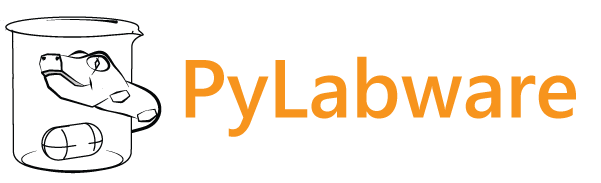

Overview
PyLabware is a simple Python library providing a common interface and sets of commands to control various pieces of equipment which are typically found in the chemical laboratory from a Python script.
There are a number of different manufacturers of lab equipment with some often being superior compared to others in particular applications and vice versa. Thus, a typical laboratory often has a bunch of different hotplate brands and models, a few rotavapors from different manufacturers and so on.
While not being a problem at all for manual operation, this becomes a major challenge for any automation as different devices even from a single manufacturer often expose incompatible communication protocols making it necessary to invest time and resources into making specific pieces of software to make all the devices talk to each other.
Over the recent years Python had made it’s way into chemistry labs as a powerful alternative to LabVIEW and other proprietary tools for various automation jobs. PyLabware aims to take the niche of providing simple and efficient way to remotely control a bunch of laboratory equipment from higher level automation scripts.
PyLabware was originally inspired by the SerialLabware developed by Sebastian Steiner and Stefan Glatzel during their time in the Cronin Group. 1 However, the original code used in the paper was merely a proof of concept and contained a number of design flaws making it’s further development impractical. PyLabware, while inspired by the same idea, has been fully written from scratch in May 2019. This version is much more stable, offers an extended range of supported devices as well as many new features.
Features
Provides a consistent set of commands for every device type. I.e. every hotplate is obliged to have methods
set_temperature()andget_temperature()irrespective of the exact manufacturer’s protocol / command names for that device.Provides an abstract device type hierarchy.
Supports multiple transports to physically communicate with device:
Provides an easy way to add new devices with Python dictionary-based command set definitions (see Adding new devices).
Can run arbitrary tasks for multiple devices in parallel (see Running concurrent tasks for devices).
Provides full simulation mode to test any action sequences without physical devices present (see Simulation mode).
Minimal requirements
Python 3.8 or newer.
PySerial package for serial communications.
Requests package for HTP REST API devices.
PyYAML package for using OpenAPI parser tool (see Utils).
Platforms
The library has been developed and tested on Windows only. In theory, it should work on *nix as well, as there is no-platform-specific code, however, the functionality and performance have not been extensively tested.
Documentation
The current documentation with examples can be found here.
Footnotes
- 1
More details can be found in the respective paper.